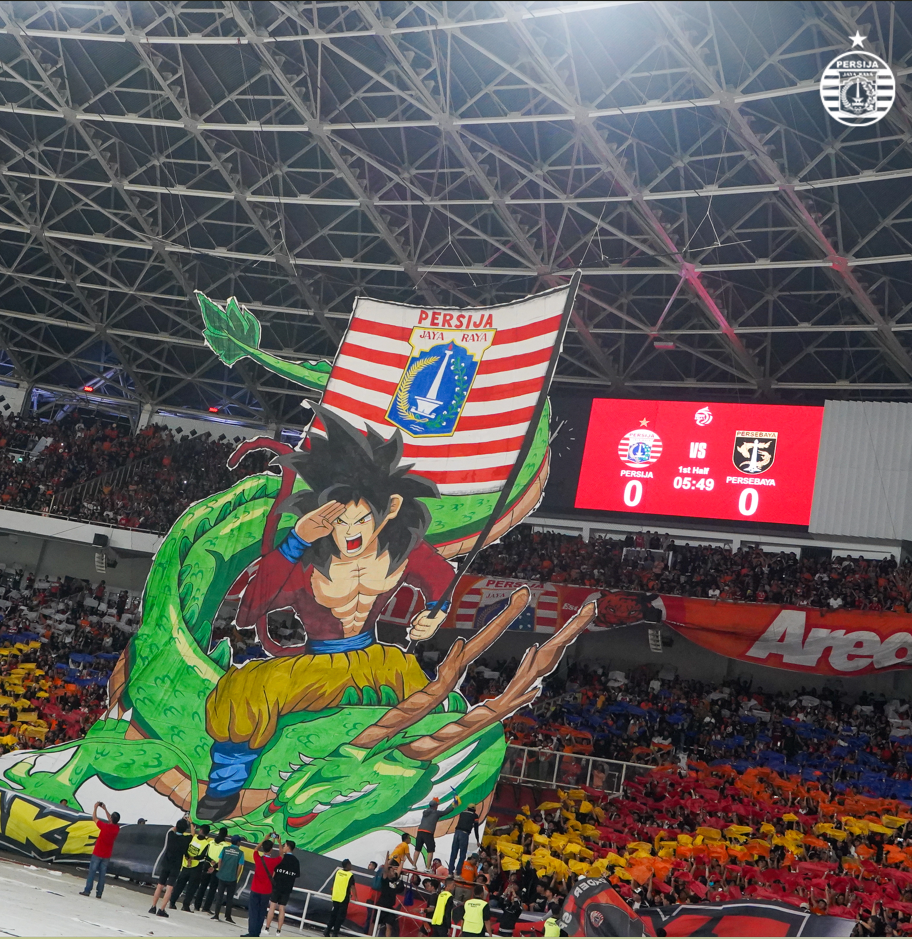
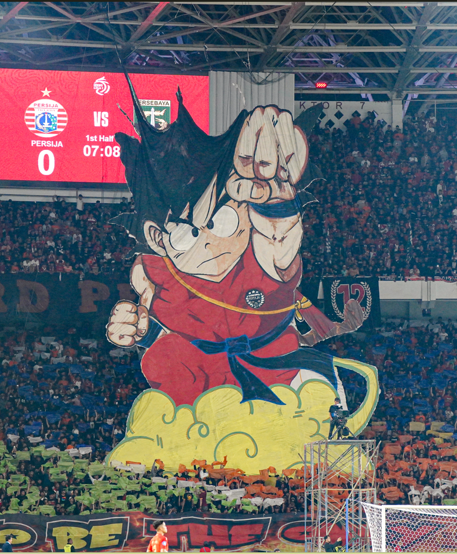

Persija Jakarta
didirikan oleh Soeri dan Alie pada 28 November 1928 dengan nama awal Voetballbond Indonesia Jacatra (VIJ).
Berdirinya VIJ saat itu juga sebagai wadah berkumpulnya klub-klub sepak bola nasionalis di Batavia pada masa itu.
Nama VIJ berubah menjadi persija pada tahun 1950 dengan Jusuf Jahja sebagai ketua.
Persija pada era 1950-an banyak diisi pemain nasional seperti Tan Liong Houw, Chris Ong, Thio Him Tjiang, Van der Vin, sampai Van der Berg.
Persija juga menjadi salah satu pencetus berdirinya Persatuan Sepakbola Seluruh Indonesia (PSSI) pada 19 April 1930. Berawal dari cita-cita yang sama dengan bond dari daerah lain,
Persija mengusung semangat persatuan yang tertanam dalam kelahiran PSSI.
Memiliki julukan Macan Kemayoran, Persija merupakan tim sepak bola di Indonesia dengan latar belakang sejarah panjang
sekaligus menjadi klub tersukses pada kompetisi PSSI dengan koleksi 11 gelar juara.
Diawali dari masa kompetisi sebelum kemerdekaan, Persija yang masih bernama VIJ meraih gelar juara pada 1931, 1933, 1934, dan 1938. Memasuki masa Perserikatan, Persija meraih juara pada 1954, 1964,
1973, 1975, dan 1979. Sedangkan di era profesional, Persija meraih dua kali juara, yakni pada 2001 dan 2018.
Sementara di ajang turnamen, tim yang identik dengan warna merah-putih itu juga meraih sejumlah gelar, yakni Runner Up Copa Indonesia 2005,
peringkat 3 Copa Indonesia 2006, peringkat 3 Copa Indonesia 2007 dam Runner Up Piala Indonesia 2018-2019. Persija juga mencatatkan satu gelar Piala Presiden yakni 2018.
Gelar yang ditoreh Persija tidak hanya di level nasional, pada kompetisi internasional tim kebanggaan ibu kota juga meraih sejumlah piala. Di antaranya juara Piala Quoch Khan di Vietnam pada 1973,
juara Piala Sultan Brunei Darussalam 2000, juara Brunei Invitation Cup 2000 dan 2001 serta Boost SportFix Super Cup Malaysia 2018.
Selain deretan sejarah yang membuat Persija menjadi klub dengan piala terbanyak di Indonesia, dari sisi penonton, Persija juga kerap mencetak rekor.
Sebanyak 413.152 menyaksikan pertandingan Persija secara langsung di stadion. Jumlah tersebut menjadi paling banyak di Indonesia dan Asia Tenggara.
Persija juga memecahkan rekor jumlah penonton saat berlaga di AFC Cup. Saat pertandingan melawan Johor Darul Ta'zim 2018 lalu, sebanyak 60.157 orang hadir di Stadion Utama Gelora Bung Karno.
Jumlah tersebut mematahkan rekor penonton AFC Cup sebelumnya yang dipegang Al Ittihad vs Qadsia FC di Final Piala AFC 2010.
Dengan sejarah panjang, membuat Persija terus melahirkan dan dihuni pemain-pemain terbaik untuk Indonesia. Mulai dari Tan Liong Houw,
Sinyo Aliandoe, Soetjipto Soentoro, Iswadi Idris hingga generasi Bambang Pamungkas serta Ismed Sofyan.
 
Faishal Adhi Nugraha - 11210251000113